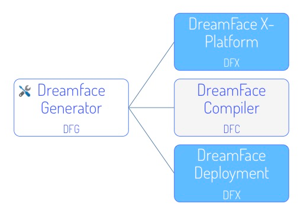

The DreamFace Cloud Platform that you use to develop applications is a cloud-based, multitenant development platform built on MEAN Stack technologies.
The DreamFace Cloud Platform is composed of:
DreamFace (DFX) and the DreamFace Compiler (DFC) are node modules. Node apps that use DreamFace need to have dependencies on DFX and DFC.
To install the DreamFace Cloud Platform, 3 node apps must be created:
The DreamFace Application Generator is a node module that can be installed globally and is used to create the environment that generates the 3 node apps: dev, comp and dep.
The app created for dev by default is called app_dev.js. This app will be used to create cloud DreamFace applications. It requires MongoDB to be installed and running.
This is the app we call DreamFace X-Platform (DFX) or just DreamFace. It is the development platform for creating DreamFace applications.
The DreamFace is a cloud-native, multitenant development platform. The main component is the DreamFace Studio which contains all of the components needed for building DreamFace applications. In the DreamFace Studio there are View Editors for drag and drop development of desktop and mobile applications using pre-defined graphical controls. DreamFace is open and extensible so you can also add your own custom graphical controls. The DreamFace View Editors have a preview capability for the iterative process of creating and testing Views. When adding applcation logic DreamFace provides a script editor where you write your script in javascript and Angular.
The DreamFace Compiler compiles DreamFace applications and manages the builds that are created during the compilation.
How the compiler works
From the Cloud Platform menu under System Configuration & Setting is the Deployment option. When you click on it, the Application Builds View is displayed. On the bottom half of the view is the Build History list indicating Build Version, Build Description, Date of Build, Status of Build (success, pending, failed) and Actions that can be taken (Deploy, Download the zip if it is a Mobile application and Delete Build). The list is displayed with the most recent build on top and the oldest build on the bottom.
Before you start your build you can set the Application Version to the version you wish to create. When you click on Build Now the next Build Version Number will be based on the application version number and the build number, so for Application Version: 1.0 and Build Number 3 will give a Build Version of 1.03.
To create a build, the DreamFace Studio sends an asynchronous request to the DreamFace Compiler to compile your specific application. The asynchronous call means you can continue developing or watch the progress of the compilation until it finishes.
Each component is compiled independently. While the compiler is working it will set the status to ‘pending’. If you click on the Pending status button a view is opened to show progress information about the build including percentage completion the and the name of View currently being compiled.
When compilation is complete, the compiler sends back a status of ‘success’ or ‘failed’. A status of ‘success’ indicates that the compilation is complete and every component was compiled successfully. When compilation is successful, the compiler sends back a zip file and a log file containing stack trace information.
Each component of your application will go through compilation. If the compiler encounters errors it won’t stop compiling. When finished, if the status is ‘failed’, no zip file is returned and if you click on the log file a view will open up file to find out where the compilation ran into trouble thus helping you to debug the application by identifying Views that contain errors.
For example, if your application has 10 Views and 2 fail to compile, those Views will be indicated. The developer can look at the stack trace in the log file to see where the error(s) occurred and quickly focus on fixing the problem. Instead of compiling and failing on one component at a time, the DreamFace Compiler takes the approach of identifying all problem components so you can save time in debugging and fixing your application.
By default the DreamFace Studio will reside on port 3000 and the Dreamface Compiler on port 3030. The compiler can also be set to run on another port or server by setting an option in the Application Configuration and Settings.
Successful Builds can be deployed. From the list of successful builds you can click on the small cloud icon to deploy the build.
The DreamFace Deployment Edition is a streamlined, lightweight runtime version of the DreamFace Developer Edition. It is built for speed of execution and efficiency.
Deployed Builds are shown in a list at the top of the Deployment View. The list of Deployed Builds includes Application Version, Build Number and Build Date.